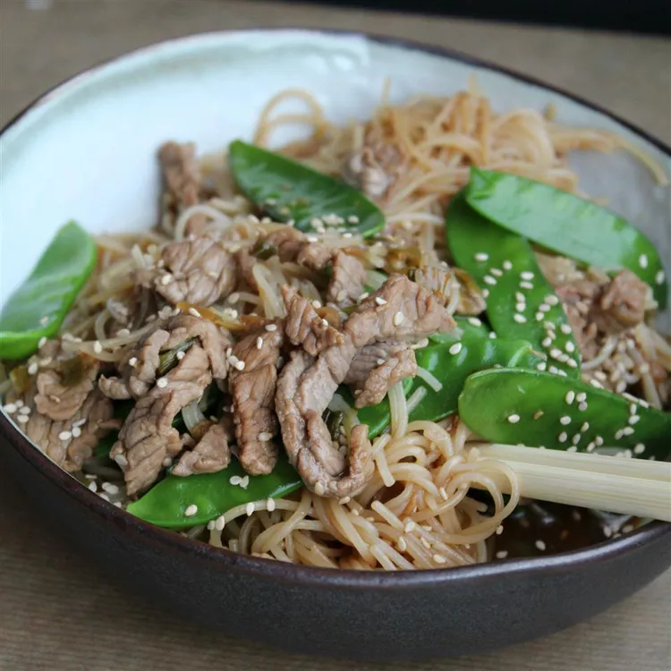

Gyuudon

Description:
Japanese beef bowl.
Ingredients:
- large white onion
- 1 teaspoon vegetable oil
- ½ cup water
- 2 tablespoons soy sauce
- 1 tablespoon brown sugar
- 1 tablespoon mirin
- 1 tablespoon sake
- ½ pound beef ribeye steak, thinly sliced
- 1 tablespoon sesame seeds, or to taste (Optional)
- 2 green onions, thinly sliced, or to taste (Optional)
- 2 teaspoons pickled ginger (beni shoga), or to taste (Optional)
- 1 sheet dried seaweed, cut into strips, or to taste (Optional)
Steps:
- Halve the onion and discard the central-most part. Cut halves into thin slices.
- Heat oil in a large skillet or wok over high heat. Add onion; cook and stir until it starts to brown, about 30 seconds. Reduce heat to medium-low; add water, soy sauce, brown sugar, mirin, and sake and simmer until flavors combine, about 3 minutes.
- Stir beef into the skillet. Cook, covered, until beef is cooked through, 3 to 5 minutes. Divide between serving bowls and garnish with sesame seeds, green onions, ginger, and seaweed strips.